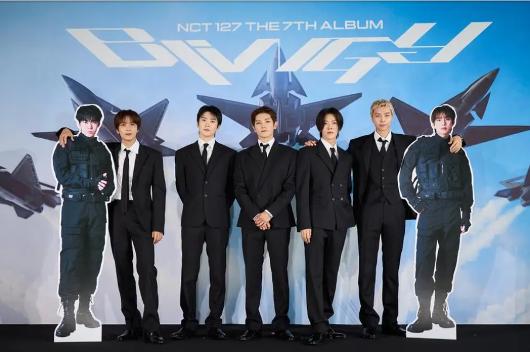

About NCT 127

NCT 127 is one of the units of NCT. The name "127" represents the longitude of Seoul, South Korea. The group is known for experimental music, strong performances, and unique concepts.
Members
- Johnny
- Taeyong
- Yuta
- Doyoung
- Jaehyun
- Jungwoo
- Haechan
My Top 5 NCT 127 Songs
- Blingy
- Punch
- Love on the Floor
- 2 Baddies
- Superhuman
NCT 127 has some of my favorite songs because their music can be experimental while still having really memorable choruses and performances.